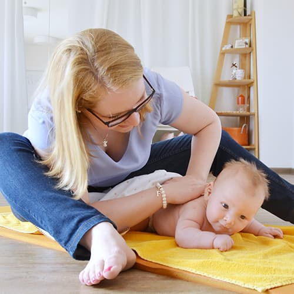

staatlich anerkannte Hebamme mit beruflicher Erfahrung in der Region.
Achtsame Begleitung von Anfang an
Du darfst dich getragen fühlen.
Ich begleite dich in Schwangerschaft, Wochenbett und Kursen mit Ruhe, Zeit und fachlicher Sicherheit. Damit aus vielen Fragen wieder Vertrauen wird.
Rheine und Umgebung
Hausbesuche im Wochenbett
persönlich und warm

Du brauchst keinen perfekten Plan.
Ich helfe dir dabei, Schritt für Schritt Orientierung zu finden.
Ganzheitliche Betreuung
Vom ersten Kennenlernen bis in die Zeit nach der Geburt
Achtsame Begleitung beginnt nicht erst mit dem ersten Termin, sondern mit dem Gefühl, dass du gesehen und ernst genommen wirst.
Betreuung in der Hebammenpraxis Bauchgeflüster und bei dir zu Hause.
Ich nehme mir Zeit, erkläre Schritte klar und arbeite ohne Hektik.
Kurse mit Raum für Fragen, Austausch und individuelle Begleitung.
Leistungen
Vier Bereiche, die dich sicher durch diese Zeit bringen
Meine Angebote sind so aufgebaut, dass du schnell erkennst, was du wann brauchst. Keine Umwege, kein Fachchinesisch, sondern klare Begleitung.

Schwangerschaft
Vorsorge, Beratung, Akupunktur, K-Taping und ein sicherer Blick auf deine individuelle Situation.

Wochenbett
Hausbesuche, Stillberatung, Kontrolle von Mutter und Kind und Hilfe bei den ersten Fragen zuhause.

Kurse
Geburtsvorbereitung, Rückbildung und Babymassage in kleinen Gruppen und entspannter Atmosphäre.

Beratung
persönliche Antworten auf die Fragen, die im Alltag mit Baby oder in der Schwangerschaft auftauchen.
Über mich
persönliche Begleitung statt anonymer Praxisroutine
Ich bin Rieke Löbker und arbeite freiberuflich in Rheine und Umgebung. Mir ist wichtig, dass du nicht nur fachlich gut betreut wirst, sondern dich auch menschlich sicher fühlst.
In der Hebammenpraxis Bauchgeflüster finden die Termine in einem ruhigen Rahmen statt. Im Wochenbett komme ich zu dir nach Hause. So bleibt die Betreuung nah an deinem Alltag und an dem, was dir wirklich hilft.
Ich erkläre, ordne ein und entscheide nie Über deinen Kopf hinweg. Denn gute Hebammenarbeit heisst für mich: Wissen, Ruhe und Respekt.


Ein vertrauter Ort
So wirkt die Praxis: freundlich, ruhig und ohne Distanz
Die Originalseite hat genau dieses Gefühl transportiert. Wir zeigen es hier bewusster und feiner über echte Bilder aus der Praxis und der Begleitung.
Ruhige Räume
Begegnung ohne Hektik, mit Platz für Gespräch und Orientierung.

Persönliche Nähe
Der Mensch steht im Mittelpunkt, nicht ein steriler Praxislook.
Wärme in der Begleitung
Die Bilder unterstreichen das, was die Leistungen fühlbar machen sollen: Sicherheit und Vertrauen.
So laeuft es ab
Ein klarer, ruhiger Ablauf ohne unnötige Huerden
-
1
Anfrage schicken
Schreib mir kurz, wobei du dir Begleitung wuenschst. Ich schaue, ob ein Platz frei ist.
-
2
Kennlernen und Planen
Wir klaeren Fragen, deinen Bedarf und die nächsten Schritte in Ruhe und ohne Druck.
-
3
Begleitung im Alltag
Je nach Phase begleite ich dich in der Praxis oder bei Hausbesuchen zu Hause weiter.
Stimmen
Warum Familien sich bei Rieke gut aufgehoben fühlen
Echte Rückmeldungen zeigen oft besser als jede Selbstdarstellung, wie sich Begleitung anfühlt.
Nina
Schwangerschaft, Akupunktur und Wochenbett
Schwangerschaft, Akupunktur und Wochenbett
Fachlich stark, aufmerksam und immer erreichbar, wenn es im Wochenbett schnell gehen musste.

Karin
Geburtsvorbereitungskurs
Geburtsvorbereitungskurs
Der Kurs hat mir Sicherheit gegeben und viele hilfreiche Informationen für die ersten Wochen mit Baby.

Britta
Vorbereitung und Rückbildung
Vorbereitung und Rückbildung
Geduldig, klar und empathisch. Ich habe mich in jeder Phase gut vorbereitet und ernst genommen gefühlt.
Steffi
Begleitung als Familie
Begleitung als Familie
Die ruhige Art und die kleinen, gut erklärten Schritte haben uns als Eltern wirklich entlastet.
nächster Schritt
Wenn du dir eine verlässliche Begleitung wuenschst, melde dich jetzt.
Ob Schwangerschaft, Wochenbett oder Kurs: Je früher wir miteinander sprechen, desto entspannter lässt sich alles planen.
Kontakt
Schnell erreichbar und ohne Umwege
Du kannst mir direkt schreiben oder anrufen. Wenn du willst, fuegen wir hier den ersten Kontakt ganz unkompliziert zusammen.